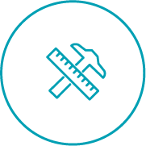
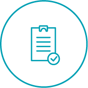
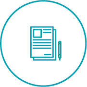
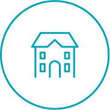
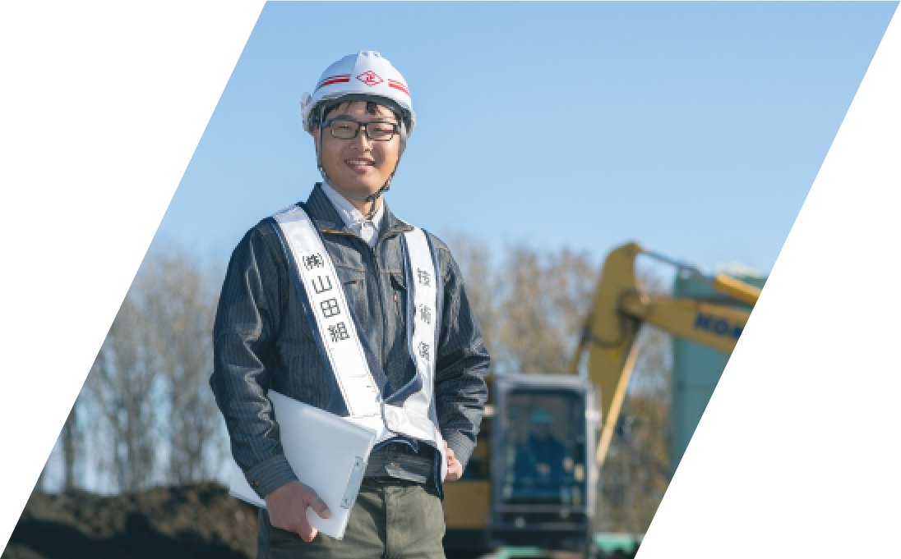
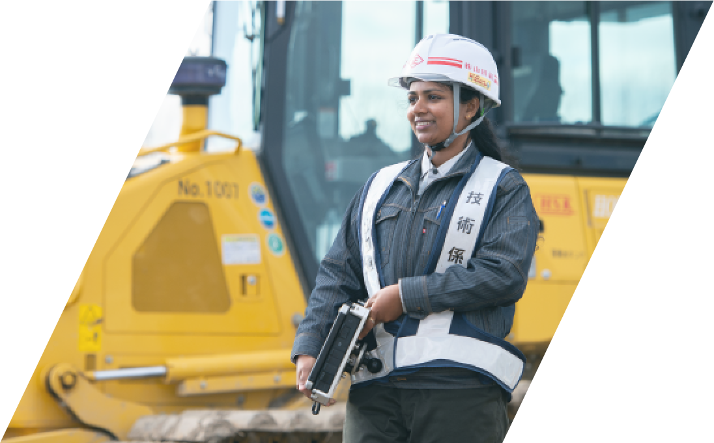

採用情報Recruit
100年以上、北海道を
創り続けてきた山田組は、
次の100年を一緒に切り拓いていく
仲間を求めています。
人のため、地域のため、
そしてあなた自身のために、
挑戦という舞台へ踏み出しましょう。
業務内容
Business Outline
大正5年の創業以来、総合建設業として道路やトンネルなど北海道の公共事業を担ってきた山田組。
老舗の技術力と使命感を深化させながら、建設業の新たな価値創造を目指しています。
当社は、建築・土木工事一式のプロジェクトリーダーとして、施工計画から工程・安全・品質などの管理、竣工検査まですべてのマネジメント業務を遂行するとともに、災害時の復旧活動や社会貢献活動にも取り組み、人々の安全で便利な暮らしを創造しています。
仕事の流れ
Flow
-
Flow01
工事受注
官公庁より発注された事業に対して、見積もり・設計を行い、入札に参加します。
晴れて、落札出来た場合、工事を受注することになります。 -

Flow02
施工計画
受注した工事をどのように進めていくか、工事方法や管理について、
グランドデザインから細部まで綿密に計画します。 -
Flow03
準備・測量
現地で工事をする前の準備や、測量を行ない、大きな構造物を作るための準備を進めていきます。
-

Flow04
工事
工事を指揮し、構造物を作っていきます。各種関係者との調整や、
工事写真の撮影、管理書類を作成します。 -

Flow05
竣工検査
完成した構造物が、要求された仕様を満たしているか、安全に使用できるかを検査します。
福利厚生
Benefits
現場での「週休２日」制度など働き方改革を積極的に進めて建設業界のこれまでのイメージを払拭し、
社員みんなが楽しく安心して活躍できる環境づくりに取り組んでいます。
-
各種社会保険・退職金制度
社会保険を完備するとともに必要な資格を有する場合の「技能手当」なども支給。社内退職金制度も導入しています。
-
特別休暇制度
年末年始休暇や有給休暇とは別に現場勤務終了時に特別休暇を取得できるなど働く意欲に応える制度づくりに努めています。
-

社宅・独身寮完備
希望者は江別市大麻の社宅（3LDK）、独身寮（ワンルーム）に入居できます。住宅手当・燃料手当も充実しています。
先輩からのメッセージ
Senior Message
長い歴史を通して、先輩社員が後輩を親身に指導する社風がしっかりと根づいています。
技術力や知識を磨きながら、人としても大きく成長できる職場です。
-

「土木事業に関わりのなかった私が
山田組に入社してから感じたこと。」土木事業部 技士補 入社1年目 別府 祐介
私は元々IT系の大学に通っており、全く畑違いの職種だと思いながら就職しました。しかし入ってみれば土木事業もIT化が進んでおり、今までの経験に助けられることが多くありました。外に出る仕事もあり、大学でIT系が肌に合わないと感じパソコンを見続ける仕事を避けていた私にとって肌に合う職場だと感じました。また、先輩方も非常に人当たりがよく、わかりやすく丁寧に仕事を教えてくれるので土木に関わりのなかった私でもとても楽しく仕事ができています。
-

「願望をもって行動すれば、
どんな挑戦でも克服できる。」土木事業部 技士補 入社1年目 ウデシカ ディラニ テヌワラ
外国人として、日本語を勉強しながら日本で働くことは非常に難しい事だと思います。仕事の問題だけではなく、言葉、生活習慣の問題がたくさんあります。それを解決するためは、気軽に相談できる人が必要です。そして、私の周りには相談できる職場の先輩や知人がいます。その親切な人々のおかげで、すべてがとてもスムーズに進んできました。会社には女性技術者が少ないですが、私はそれでも楽しんで仕事をしています。苦しい事も楽しい事もあります。今後もいろいろなことがたくさんあり、いろいろな困難に直面しなければなりません。しかし、一旦心を整えてその時にしていることを愛することができれば、すべてはより簡単で面白くなると思います。挑戦したことを後悔することなく、成功と人生の満足を同時にアーカイブできると信じています。
募集要項
Application Guidelines
- 雇用形態
- 正社員
- 募集職種
- 土木施工管理技士（現場施工）
官庁から受注した請負土木工事完成までの一切の業務で、主に現場の管理となります。
（測量、CAD図面、写真整理、施工管理、安全管理、品質管理、工程管理など） - 応募資格
- 高卒以上
- 勤務予定地
- 北海道札幌市 ただし、道内一円の作業現場への出張有り（転勤の可能性無し）
- 給与
- 月給 大卒：220,000円 / 高専卒：200,000円 / 高卒：180,000円
- 手当
- 役付手当、住宅手当、燃料手当、技能手当、世帯手当、通勤手当、 など
- 休日
- 週休２日制、土日祝、夏期休暇、年次有給休暇、特別休暇、慶弔休暇、 など
- 勤務時間
- 午前８時３０分～午後５時３０分
- 保険
- 健康保険、厚生年金、雇用保険、労災保険完備
- 福利厚生
- 社員寮、社宅など
- 選考方法
- まずは、当サイトのエントリーフォームよりご応募ください。採用担当から追ってご連絡させていただきます。
選考の流れ / エントリー → 履歴書送付 → 書類審査 → 会社説明会、筆記試験、選考（面接複数回）